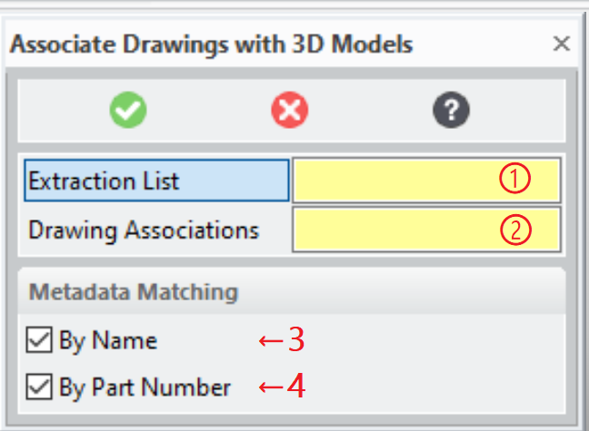
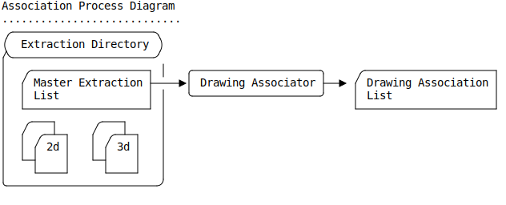
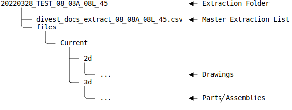
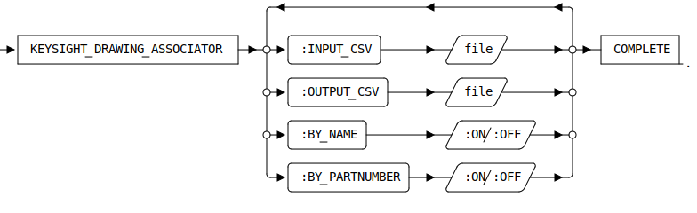

KEYSIGHT_DRAWING_ASSOCIATOR [Public Dialog]
Package: keysight-migrator (Nick name(s): :kym)
Associate drawings with 3d models using a Master Extraction List.
Dialog

- Location of the Master Extraction List (.csv)
- Location of the Drawing Association List (.csv) to be generated by the association process. Make sure to choose a location outside the Extraction Directory.
- Match drawing names and part numbers to model names if the sysid based match fails or is incomplete.
- Match drawing part numbers to model part numbers if the sysid based match fails or is incomplete.
The Drawing Association Tool uses comma separated records read from a Master Extraction List to obtain information about drawings and 3d models (parts / assemblies) located in an 'Extraction Folder'. This information is used in the following ways to establish an association between drawings and 3d models (parts / assemblies):
- The 3d models referenced by the Master Extraction List are scanned for instances
- Each drawing referenced in the Master Extraction List is loaded into Modeling in order to inquire the sysids of the 3d models referenced the drawing.
- The sysids obtained from the drawing are matched against the sysids obtained in step 1. The match result is reported in the output csv file (drawing associations file).
- If enabled a metadata match is applied to drawings which incomplete matching in the previous step. The 3d models matching the metadata criteria are reported in the output csv file.
This dialog reads the Master extraction List from a Extraction Directory containing 3d models and drawings to generate a Drawing Association List which is another csv file describing the detected associons of drawings with 3d models.

- Master Extraction List
-
The Master Extraction List is a comma separated file (.csv) at the root of an extraction folder containing 2-d and 3-d model files. An extraction folder typically has a structure like this (sample taking from Keysight test data):

The first line of the Master Extraction List (header) is expected to define at least these field names:
Field Name Comment TYPE The type of the object described by the record. NAME The name of the object described by the record. FILEPATH Path to the object's file relative to the Master Extraction List location. PART_NUMBER Part number of the object described by the record. FILE_TO_LOAD The basename of the object's file. For the association process records with following values in the TYPE field are processed:
Object Type File Extension Action ME Drawing *.mi; *.ami Drawing is loaded with Annotation and SYSIDs of referenced 3-d models are retrieved. ME Component CAD Model *.sdpc Part contents file. If the part instance file is present (.sdp), it is scanned for instance SYSIDs to match drawing owners. ME Assembly CAD Model *.sdac Assembly contents file. The contents file it is scanned for instance SYSIDs to match drawing owners. If the assembly instance file (.sda ) is present , it is scanned for instance SYSIDs to match drawing owners as well. ⚠️ Additional fields are ignored.
- Drawing Association List
-
The drawing to model association list (csv) reports the association results. The first line (header) of this file defines the field names of the records:
Field Name Comment DRAWING_NAME Matches the NAME field of a drawing listed in the Master Extraction List. DRAWING_REV The drawing revision of a drawing listed in the Master Extraction List (REV field) VIEWSET_OWNER_NAME The name of an associated 3d model as defined in the Master Extraction List (NAME field) VIEWSET_OWNER_REV The name of an associated 3d model as defined in the Master Extraction List (NAME field) STATUS The association status. See table below for a list of status messages Status messages:
Status Comment SUCCESS Viewset owner was successfully identified n of m viewset owners were not found in any 3d model! n viewset owners could not be indentified Drawing imported with warnings. See log file: filepathImport warnings are written to a log file located at filepath. This is not fatal. The viewset owners could still be retrieved.Drawing is not associated with any 3d model Drawing was imported successfully, but is plain 2d and is not associated with any 3d model. Please have a look into the log file Drawing import failed. Details are logged to a file located at filepath.Viewset owner found multiple times in: name listMore than one model qualifies as a viewset owner. name listis the list of names as defined in the Master Extraction List (NAME field).KPN-link The association was established by one of the metadata matching rules.
Syntax

Options
:INPUT_CSV- Location of the Master Extraction List {
string}. :OUTPUT_CSV- Location of the Drawing Association List {
string}. :BY_NAME- Associate drawing by name if sysid matching fails.
:BY_PARTNUMBER- Associate drawing by part nuimber if sysid matching fails.